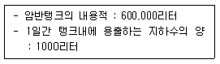
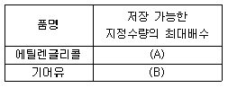
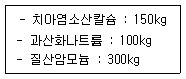
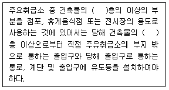
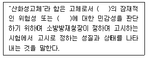
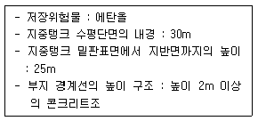
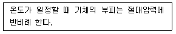
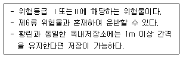
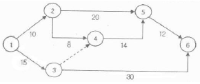

위험물기능장 (2011-04-17 기출문제)
1과목: 임의구분
1. 위험물 암반탱크가 다음과 같은 조건일 때 탱크의 용량은 몇 L 인가?

- 595,000리터
- 594,000리터
- 593,000리터
- 592,000리터
(정답률: 82%)

2. 자신은 불연성물질이지만 산화력을 가지고 있는 물질은?
- 마그네슘
- 과산화수소
- 알킬알루미늄
- 에틸렌글리콜
(정답률: 92%)
3. 위험물안전관리법상 제6류 위험물을 저장 또는 취급하는 장소에 이산화탄소소화기가 적응성이 있는 경우는?
- 폭발의 위험이 없는 장소
- 사람이 상주하지 않는 장소
- 습도가 낮은 장소
- 전자설비를 설치한 장소
(정답률: 67%)
4. 한변의 길이는 12m, 다른 한변의 길이는 60m 인 옥내저장소에 자동화재탐지설비를 설치하는 경우 경계구역은 원칙적으로 최소한 몇 개로 하여야 하는가? (단, 차동식스포트형감지기를 설치한다.)
- 1
- 2
- 3
- 4
(정답률: 79%)
5. 자동화재탐지설비를 설치하여야 하는 대상이 아닌 것은?
- 처마높이가 6m 이상인 단층 옥내저장소
- 저장창고의 연면적이 100m2인 옥내저장소
- 지정수량 100배의 에탄올을 저장 또는 취급하는 옥내저장소
- 연면적이 500m2인 일반취급소
(정답률: 68%)
6. 제6류 위험물의 성질, 화재예방 및 화재발생시 소화방법에 관한 설명 중 틀린 것은?
- 옥내저장소에 과염소산을 저장하는 경우 천막 등으로 햇빛을 가려야 한다.
- 과염소산은 물과 접촉하여 발열하고 가열하면 유독성 가스를 발생한다.
- 질산은 산화성이 강하므로 가능한 한 환원성 물질과 혼합하여 중화시킨다.
- 과염소산의 화재에는 물분무소화설비, 포소화설비 등이 적응성이 있다.
(정답률: 76%)
7. 연소에 관한 설명으로 틀린 것은?
- 위험도는 연소범위를 폭발상한계로 나눈 값으로 값이 클수록 위험하다.
- 인화점 미만에서는 점화원을 가해도 연소가 진행되지 않는다.
- 발화점은 같은 물질이라도 조건에 따라 변동되며 절대적인 값이 아니다.
- 연소점은 연소상태가 일정 시간 이상 유지될 수 있는 온도이다.
(정답률: 79%)
8. 간이탱크저장소의 설치 기준으로 옳지 않은 것은?
- 1개의 간이탱크 저장소에 설치하는 간이저장탱크는 3개 이하로 한다.
- 간이저장탱크의 용량은 800L 이하로 한다.
- 간이저장탱크는 두께 3.2mm 이상의 강판으로 제작한다.
- 간이저장탱크에는 통기관을 설치하여야 한다.
(정답률: 85%)
9. 경유 150000리터는 몇 소요단위에 해당하는가?
- 7.5단위
- 10단위
- 15단위
- 30단위
(정답률: 91%)
10. 마그네슘의 성질에 대한 설명 중 틀린 것은?
- 물보다 무거운 금속이다.
- 은백색의 광택이 난다.
- 온수와 반응 시 산화마그네슘과 수소를 발생한다.
- 융점은 약 650℃ 이다.
(정답률: 71%)
11. 불소계 계면활성제를 주성분으로 하여 물과 혼합하여 사용하는 소화약제로서, 유류화재 발생시 분말소화약제와 함께 사용이 가능한 포 소화약제는?
- 단백포소화약제
- 불화단백포소화약제
- 합성계면활성제포소화약제
- 수성막포소화약제
(정답률: 81%)
12. 황린에 대한 설명으로 옳은 것은?
- 투명 또는 담황색 액체이다.
- 무취이고 증기비중이 약 1.82이다.
- 발화점은 60~70℃ 이므로 가열시 주의해야 한다.
- 환원력이 강하여 쉽게 연소한다.
(정답률: 65%)
13. 위험물안전관리법상 정기점검의 대상이 되는 제조소등을 에 해당하지 않는 것은?
- 지하탱크저장소
- 이동탱크저장소
- 이송취급소
- 옥내탱크저장소
(정답률: 58%)
14. 트리니트로톨루엔의 화학식으로 옳은 것은?
- C6H2CH3(NO2)3
- C6H3(NO2)3
- C6H2(NO3)3OH
- C10H6(NO2)2
(정답률: 81%)
15. 트리에틸알루미늄이 물과 반응하였을 때 생성되는 물질은?
- Al(OH)3, C2H2
- Al(OH)3, C2H6
- Al2O3, C2H2
- Al2O3, C2H6
(정답률: 85%)
16. 위험물의 지정수량 중 옳지 않은 것은?
- N2H4H2SO4 : 100kg
- NH2OH : 100kg
- C(NH2)3NO3 : 200kg
- C12H10N2 : 200kg
(정답률: 53%)
17. 제2류 위험물에 속하지 않는 것은?
- 1기압에서 인화점이 30℃ 인 고체
- 직경이 1mm 인 막대 모양의 마그네슘
- 고형알코올
- 구리분, 니켈분
(정답률: 72%)
18. 과염소산과 질산의 공통성질로 옳은 것은?
- 환원성물질로서 증기는 유독하다.
- 다른 가연물의 연소를 돕는 가연성물질이다.
- 강산이고 물과 접촉하면 발열한다.
- 부식성은 적으나 다른 물질과 혼촉발화 가능성이 높다.
(정답률: 77%)
19. 서로 혼재가 가능한 위험물은? (단, 지정수량의 10배를 취급하는 경우이다.)
- KClO4 와 Al4C3
- CH3CN 와 Na
- P4 와 Mg
- HNO3 와 (C2H5)3Al
(정답률: 71%)
20. 위험물안전관리법상 위험물제조소등 설치허가 취소사유에 해당하지 않는 것은?
- 위험물제조소의 바닥을 교체하는 공사를 하는데 변경허가를 득하지 아니한 때
- 법정기준을 위반한 위험물제조소에 발한 수리개조명령을 위반한 때
- 예방규정을 제출하지 아니한 때
- 위험물안전관리자가 장기 해외여행을 갔음에도 그 대리자를 지정하지 아니한 때
(정답률: 74%)
2과목: 임의구분
21. A 물질 1000kg 을 소각하고자 한다. 1000kg 중 유황의 함유량이 0.5wt% 라고 한다면 연소가스 중 SO2 의 농도는 몇 mg/Nm3 인가? (단, A 물질 1 ton 의 습배기 연소가스량은 6500Nm3이다.)
- 1080
- 1538
- 2522
- 3450
(정답률: 57%)
22. 벤조일퍼옥사이드의 용해성에 대한 설명으로 옳은 것은?
- 물과 대부분 유기용제에 잘 녹는다.
- 물과 대부분 유기용제에 녹지 않는다.
- 물에는 잘 녹으나 대부분 유기용제에는 녹지 않는다.
- 물에 녹지 않으나 대부분 유기용제에 잘 녹는다.
(정답률: 84%)
23. 각 물질의 화재 시 발생하는 현상과 소화방법에 대한 설명으로 틀린 것은?
- 황린의 소화는 연소 시 발생하는 황화수소 가스를 피하기 위하여 바람을 등지고 공기호흡기를 착용한다.
- 트리에틸알루미늄의 화재 시 이산화탄소소화약제, 할로겐화합물소화약제의 사용을 금한다.
- 리튬 화재 시에는 팽창질석, 마른모래 등으로 소화한다.
- 부틸리듐 화재의 소화에는 포소화약제를 사용할 수 없다.
(정답률: 75%)
24. 단층건축물에 옥내탱크저장소를 설치하고자 한다. 하나의 탱크전용실에 2개의 옥내저장탱크를 설치하여 에틸렌글리콜과 기어유를 저장하고자 한다면 저장 가능한 지정수량의 최대배수를 옳게 나타낸 것은?

- (A)40배, (B)40배
- (A)20배, (B)20배
- (A)10배, (B)30배
- (A)5배, (B)35배
(정답률: 68%)
25. 이황화탄소에 대한 설명으로 틀린 것은?
- 인화점이 낮아 인화가 용이하므로 액체자체의 누출뿐만 아니라 증기의 누설을 방지하여야 한다.
- 휘발성 증기는 독성이 없으나 연소생성물 중 SO2는 유독성 가스이다.
- 물보다 무겁고 녹기 어렵기 때문에 물을 채운 수조탱크에 저장한다.
- 강산화제와 접촉에 의해 격렬히 반응하고 혼촉발화 또는 폭발의 위험성이 있다.
(정답률: 71%)
26. 제1류 위험물 중 무기과산화물과 제5류 위험물 중 유기과산화물의 소화방법으로 옳은 것은?
- 무기과산화물 : CO2 에 의한 질식소화 유기과산화물 : CO2에 의한 냉각소화
- 무기과산화물 : 건조사에 의한 피복소화 유기과산화물 : 분말에 의한 질식소화
- 무기과산화물 : 포에 의한 질식소화 유기과산화물 : 분말에 의한 질식소화
- 무기과산화물 : 건조사에 의한 피복소화 유기과산화물 : 물에 의한 냉각소화
(정답률: 85%)
27. 비점이 약 111℃ 인 액체로서, 산화하면 벤즈알데히드를 거쳐 벤조산이 되는 위험물은?
- 벤젠
- 톨루엔
- 크실렌
- 아세톤
(정답률: 71%)
28. 큐멘(cumene)공정으로 제조되는 것은?
- 아세트알데히드와 에테르
- 페놀과 아세톤
- 크실렌과 에테르
- 크실렌과 아세트알데히드
(정답률: 70%)
29. 위험물의 취급소에 해당하지 않는 것은?
- 일반취급소
- 옥외취급소
- 판매취급소
- 이송취급소
(정답률: 68%)
30. 다음 물질을 저장하는 저장소로 허가를 받으려고 위험물 저장소 설치허가신청서를 작성하려고 한다. 해당하는 지정수량의 배수는 얼마인가?

- 12
- 9
- 6
- 5
(정답률: 79%)
31. 국소방출방식의 이산화탄소소화설비 중 저압식 저장용기에 설치되는 압력경보장치는 어느 압력 범위에서 작동하는 것으로 설치하여야 하는가?
- 2.3MPa 이상의 압력과 1.9MPa 이하의 압력에서 작동하는 것
- 2.5MPa 이상의 압력과 2.0MPa 이하의 압력에서 작동하는 것
- 2.7MPa 이상의 압력과 2.3MPa 이하의 압력에서 작동하는 것
- 3.0MPa 이상의 압력과 2.5MPa 이하의 압력에서 작동하는 것
(정답률: 89%)
32. 제6류 위험물에 대한 설명 중 맞는 것은?
- 과염소산은 무취, 청색의 기름상 액체이다.
- 과산화수소는 물, 알코올에는 용해하나 에테르에는 녹지 않는다.
- 질산은 크산토프로테인 반응과 관계가 있다.
- 오불화브롬의 화학식은 C2F5Br 이다.
(정답률: 79%)
33. 분자식이 CH2OHCH2OH 인 위험물은 제 몇 석유류에 속하는가?
- 제1석유류
- 제2석유류
- 제3석유류
- 제4석유류
(정답률: 57%)
34. 청정소화약제의종류가 아닌 것은?
- FC-3-1-10
- HCFC BLEND A
- IG-541
- CTC-124
(정답률: 71%)
35. 지정수량의 단위가 나머지 셋과 다른 하나는?
- 황린
- 과염소산
- 나트륨
- 이황화탄소
(정답률: 69%)
36. 니트로셀룰로오스의 화재발생시 가장 적합한 소화 약제는?
- 물소화약제
- 분말소화약제
- 이산화탄소소화약제
- 할로겐화합물소화약제
(정답률: 83%)
37. 질산암모늄의 산소평형(Oxygen Balance) 값은?
- 0.2
- 0.3
- 0.4
- 0.5
(정답률: 64%)
38. 위험물 운송에 대한 설명 중 틀린 것은?
- 위험물의 운송은 당해 위험물을 취급할 수 있는 국가기술자격자 또는 위험물안전관리자 강습교육 수료자여야 한다.
- 알킬리튬, 알킬알루미늄을 운송하는 경우에는 위험물 운송책임자의 감독 또는 지원을 받아 운송하여야한다.
- 위험물운송자는 이동탱크저장소에 의하여 위험물을 운송하는 때에는 해당 국가기술자격증 또는 교육수료증을 지녀야 한다.
- 휘발유를 운송하는 위험물운송자는 위험물 안전관리카드를 휴대하야야 한다.
(정답률: 60%)
39. 다음 ( )에 알맞은 숫자를 순서대로 나열한 것은?

- 2층, 1층
- 1층, 1층
- 2층, 2층
- 1층, 2층
(정답률: 86%)
40. 화학적 소화방법에 해당하는 것은?
- 냉각소화
- 부촉매소화
- 제거소화
- 질식소화
(정답률: 90%)
3과목: 임의구분
41. 위험물의 화재 위험성이 증가하는 경우가 아닌 것은?
- 비점이 높을수록
- 연소범위가 넓을수록
- 착화점이 낮을수록
- 인화점인 낮을수록
(정답률: 89%)
42. 위험물안전관리법령에서 정의하는 산화성고체에 대해 다음( ) 안에 알맞은 용어는 차례대로 나타낸 것은?

- 산화력, 온도
- 착화, 온도
- 착화. 충격
- 산화력, 충격
(정답률: 79%)
43. 스프링클러소화설비가 전체적으로 적응성이 있는 대상물은?
- 제1류 위험물
- 제2류 위험물
- 제4류 위험물
- 제5류 위험물
(정답률: 79%)
44. 불연성이면서 강산화성인 위험물질이 아닌 것은?
- 과산화나트륨
- 과염소산
- 질산
- 피크린산
(정답률: 76%)
45. 제4류 위험물의 지정수량으로 옳지 않은 것은?
- 파리딘 : 200L
- 아세톤 : 400L
- 아세트산 : 2000L
- 니트로벤젠 : 2000L
(정답률: 70%)
46. 지중탱크의 옥외탱크저장소에 다음과 같은 조건의 위험물을 저장하고 있다면 지중탱크 지반면의 옆판에서 부지 경계선 사이에는 얼마 이상의 거리를 유지해야 하는가?

- 100m 이상
- 75m 이상
- 50m 이상
- 25m 이상
(정답률: 63%)
47. 이송취급소의 배관설치 기준 중 배관을 지하에 매설하는 경우의 안전거리 또는 매설깊이로 옳지 않은 것은?
- 건축물(지하가 내의 건축물을 제외) : 1.5m 이상
- 지하가 및 터널 : 10m 이상
- 산이나 들에 매설하는 배관의 외면과 지표면과의 거리 : 0.3m 이상
- 수도법에 의한 수도시설(위험물의 유입우려가 있는 것) : 300m 이상
(정답률: 80%)
48. 메틸에틸케톤에 대한 설명 중 틀린 것은?
- 증기는 공기보다 무겁다.
- 지정수량은 200L 이다.
- 이소부틸알코올을 환원하여 제조할 수 있다.
- 품명은 제1석유류 이다.
(정답률: 69%)
49. 다음에서 설명하고 있는 법칙은?

- 일정성분비의 법칙
- 보일의 법칙
- 샤를의 법칙
- 보일-샤를의 법칙
(정답률: 88%)
50. 제4류 위험물 중 20L 플라스틱용기에 수납할 수 있는 것은?
- 이황화탄소
- 휘발유
- 디에틸에테르
- 아세트알데히드
(정답률: 83%)
51. 운반용기 내용적의 95% 이하의 수납율로 수납하여야 하는 위험물은?
- 과산화벤조일
- 질산에틸
- 니트로글리세린
- 메틸에틸케톤퍼옥사이드
(정답률: 83%)
52. 유황에 대한 설명 중 틀린 것은?
- 순도가 60wt% 이상이면 위험물이다.
- 물에 녹지 않는다.
- 전기에 도체이므로 분진폭발의 위험이 있다.
- 황색의 분말이다.
(정답률: 79%)
53. 위험물안전관리법령에서 정한 소화설비의 적응성기준에서 이산화탄소소화설비가 적응성이 없는 대상은?
- 전기설비
- 인화성고체
- 제4류 위험물
- 제6류 위험물
(정답률: 72%)
54. [보기]의 요건을 모두 충족하는 위험물 중 지정수량이 가장 큰 것은?

- 염소산염류
- 무기과산화물
- 질산염류
- 과망간산염류
(정답률: 54%)
55. 다음 검사의 종류 중 검사공정에 의한 분류에 해당되지 않는 것은?
- 수입검사
- 출하검사
- 출장검사
- 공정검사
(정답률: 90%)
56. 그림과 같은 계획공정도(Network)에서 주공정은? (단, 화살표 아래의 숫자는 활동시간을 나타낸 것이다.)

- ① - ③ - ⑥
- ① - ② - ⑤ - ⑥
- ① - ② - ④ - ⑤ - ⑥
- ① - ③ - ④ - ⑤ - ⑥
(정답률: 86%)
57. Ralph M. Barnes 교수가 제시한 동작경제의 원칙 중 작업장 배치에 관한 원칙(Arrangement of the workplace)에 해당되지 않는 것은?
- 가급적이면 낙하식 운반방법을 이용한다.
- 모든 공구나 재료는 지정된 위치에 있도록 한다.
- 충분한 조명을 하여 작업자가 잘 볼 수 있도록 한다.
- 가급적 용이하고 자연스런 리듬을 타고 일할 수 있도록 작업을 구성하여야 한다.
(정답률: 82%)
58. 로트 크기 1000, 부적합품률이 15%인 로트에서 5개의 랜덤시료 중에서 발견된 부적합품수가 1개일 확률을 이항분포로 계산하면 약 얼마인가?
- 0.1648
- 0.3915
- 0.6085
- 0.8352
(정답률: 62%)
59. 다음 중 계량값 관리도에 해당되는 것은?
- c 관리도
- nP 관리도
- R 관리도
- u 관리도
(정답률: 78%)
60. 품질코스트(quality cost)를 예방코스트, 실패코스트, 평가코스트로 분류할 때, 다음 중 실패코스트(failurecost)에 속하는 것이 아닌 것은?
- 시험 코스트
- 불량대책 코스트
- 재가공 코스트
- 설계변경 코스트
(정답률: 76%)
암반탱크의 부피 = (밑면의 넓이) x (높이)
밑면의 넓이는 탱크의 지름을 이용하여 구할 수 있습니다.
밑면의 넓이 = (지름/2)^2 x π
따라서, 암반탱크의 부피는 다음과 같이 계산할 수 있습니다.
부피 = (지름/2)^2 x π x 높이
주어진 그림에서 암반탱크의 지름은 20m, 높이는 15m 입니다.
따라서, 암반탱크의 부피는 다음과 같이 계산할 수 있습니다.
부피 = (20/2)^2 x π x 15 = 15000π
여기에 π를 대입하면, 부피는 약 47,123.85m^3 입니다.
1m^3는 1000L이므로, 부피를 1000으로 곱하여 L로 변환하면 다음과 같습니다.
부피 = 47,123.85 x 1000 = 47,123,850L
따라서, 암반탱크의 용량은 593,000리터가 됩니다.